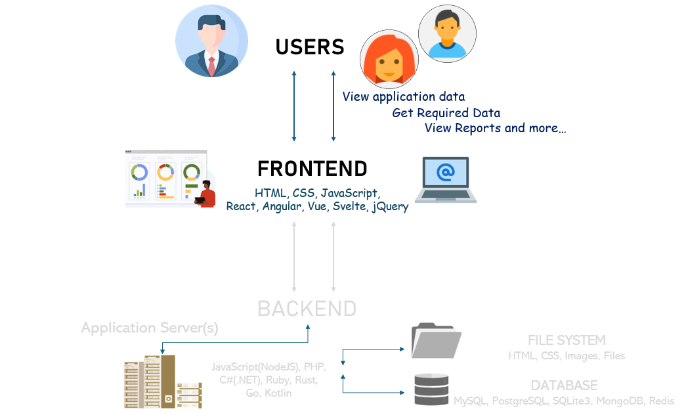
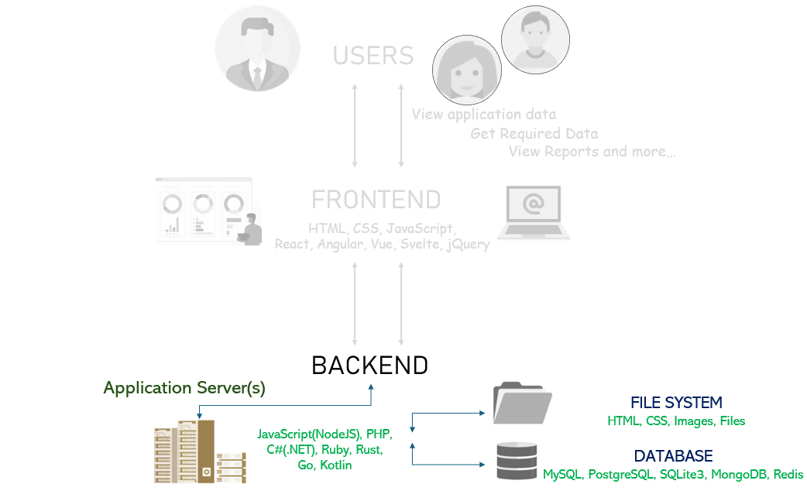
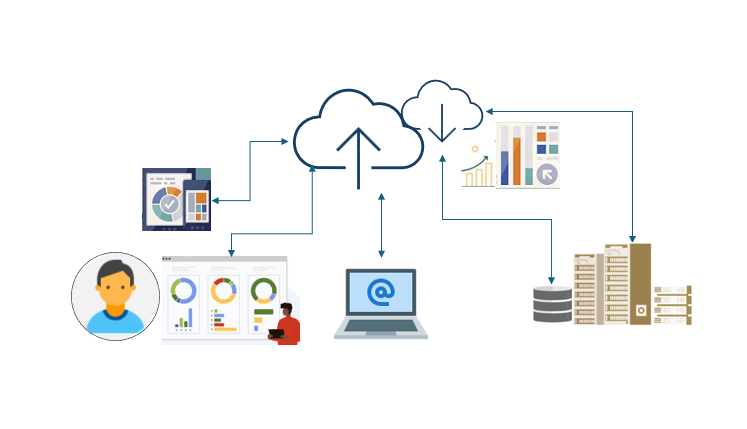
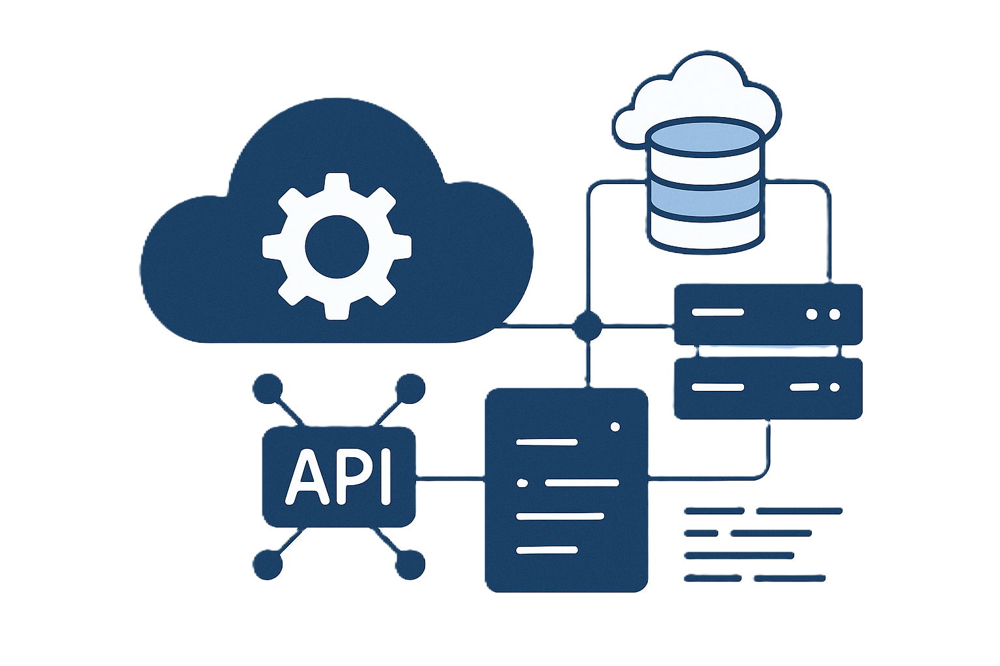

Frontend Development
We design intuitive, responsive, and user-friendly interfaces that enhance user experience and engagement. Our frontend engineers work with modern frameworks such as React, Angular, and Vue.js, ensuring fast, dynamic, and accessible web applications optimized for all devices.

Engineering Rich User Experiences
At FessiT, our frontend development team engineers responsive, performant, and scalable user interfaces that serve as the face of complex systems. We blend engineering precision with modern design principles to create seamless user experiences across web and mobile platforms.
Technology Stack
- Core Web Technologies: HTML5, CSS3, JavaScript (ES6+), TypeScript
- Frameworks & Libraries: React.js, Angular, Vue.js, Next.js, Nuxt.js
- Styling Tools: SASS, LESS, Tailwind CSS, Bootstrap, Styled Components
- Build Tools: Webpack, Vite, Gulp, NPM/Yarn, ESLint, Prettier, Jest
- UI/UX Integration: Figma, Adobe XD, Zeplin, WCAG compliance, responsive design
Application Domains
- Enterprise Web Portals
- IoT Dashboards & Device Interfaces
- B2B & B2C E-commerce Platforms
- Single-Page Applications (SPAs)
- Progressive Web Apps (PWAs)
- Admin Panels & Analytics Dashboards
- Cross-platform Mobile UIs (React Native, Ionic)
Engineering-Driven Frontend Development
- Component Reusability & Design Systems: Scalable UI libraries and reusable components
- API-Driven UI: Seamless integration with RESTful or GraphQL backends
- Performance Optimization: Lazy loading, code splitting, image optimization, Lighthouse audits
- DevOps-Friendly Delivery: CI/CD pipelines for automated builds and cloud deployments
Backend Development
Our backend development services focus on building secure, robust, and maintainable server-side applications. Leveraging technologies like Node.js, Python (Django/Flask), .NET, and Java Spring Boot, we implement efficient business logic, API services, and database integrations tailored to your operational needs.

Powering Scalable and Reliable Systems
At FessiT, we architect and develop backend systems that are the backbone of secure, scalable, and high-performance applications. Our backend engineering approach focuses on clean architecture, modular design, efficient APIs, and seamless integration with databases, cloud services, and third-party systems.
Technology Stack
- Programming Languages & Frameworks: Node.js (Express, NestJS), Python (Django, Flask), Java (Spring Boot), .NET Core, Go, Rust
- API Design & Communication: RESTful APIs, GraphQL, WebSockets, MQTT, gRPC
- Database Management: PostgreSQL, MySQL, MongoDB, Cassandra, Redis, DynamoDB, ORM tools (Sequelize, TypeORM, SQLAlchemy, Hibernate)
- Authentication & Security: OAuth2, JWT, RBAC, Secure API practices, Identity provider integration (Auth0, Okta, Azure AD)
- DevOps & Automation: Docker, Kubernetes, CI/CD (Jenkins, GitHub Actions), Terraform, Ansible
Application Domains
- Enterprise Backend Systems
- IoT Data Processing & Messaging Backends
- Real-Time Applications & APIs
- eCommerce Platforms & Payment Gateways
- CRM, ERP & Middleware Services
- Data Analytics & Reporting Engines
- Microservices & Event-Driven Architectures
Engineering-Driven Backend Development
- Microservices Architecture: Containerized, loosely coupled services with Docker & Kubernetes
- High Performance & Scalability: Caching (Redis), Async processing (Kafka, RabbitMQ), Load balancing
- Secure & Modular Codebases: Clean architecture, validation, error handling, logging best practices
- Observability & Monitoring: Prometheus, Grafana, ELK Stack for metrics, logs, and alerts
Cloud Development
FessiT helps businesses modernize their architecture with cloud-native solutions. We design and deploy scalable applications using AWS, Microsoft Azure, and Google Cloud Platform, enabling microservices, serverless computing, and container orchestration with Docker and Kubernetes for greater agility and performance.

Enabling Agile, Scalable, and Cloud-Native Solutions
At FessiT, we design and implement cloud-native solutions that enable scalability, flexibility, and operational efficiency. Our cloud engineering approach focuses on resilient architecture, seamless deployment automation, and optimal use of cloud services to accelerate digital transformation across industries.
Technology Stack
- Cloud Platforms: AWS, Microsoft Azure, Google Cloud Platform (GCP)
- Cloud-Native Services: Lambda (Serverless), API Gateway, S3, EC2, Cloud Functions, Azure Functions, Pub/Sub
- Containerization & Orchestration: Docker, Kubernetes (EKS, AKS, GKE), Helm
- Infrastructure as Code (IaC): Terraform, AWS CloudFormation, Pulumi
- CI/CD & Automation: GitHub Actions, GitLab CI/CD, Jenkins, Azure DevOps Pipelines
Application Domains
- Cloud-Native Application Development
- Serverless Architecture & Microservices
- Scalable API Backends & Gateways
- Cloud-Based IoT Platforms & Data Pipelines
- Enterprise Cloud Migrations & Hybrid Solutions
- Big Data Processing & Streaming Services
- Multi-Region, High-Availability Deployments
Engineering-Driven Cloud Development
- Resilient Architectures: Auto-scaling, Load balancing, Fault-tolerant deployment patterns
- Cost Optimization: Right-sized instances, Reserved capacity planning, Resource tagging & budgeting
- Cloud Security: Identity & Access Management (IAM), Encryption at rest and in transit, Network isolation (VPC, Subnets)
- Monitoring & Observability: CloudWatch, Azure Monitor, Stackdriver, centralized logging and metrics
System Integration
Seamless integration is key to ensuring different systems work together cohesively. Our team specializes in connecting enterprise systems, third-party APIs, IoT devices, and cloud platforms—enabling real-time data flow and unified operations using industry-standard protocols and custom integration layers.

Connecting Systems for Seamless Interoperability and Data Flow
At FessiT, we specialize in engineering seamless system integrations that connect diverse platforms, applications, devices, and data flows. Our integration services focus on interoperability, scalability, and real-time data exchange to ensure smooth operations across complex ecosystems.
Technology Stack
- Integration Protocols: REST, SOAP, gRPC, WebSockets, MQTT, OPC UA
- Middleware & Messaging: Apache Kafka, RabbitMQ, MQTT Brokers, Azure Service Bus, AWS SQS/SNS
- API Management: API Gateway (AWS, Azure), Kong, Apigee, Postman, Swagger/OpenAPI
- Data Exchange Formats: JSON, XML, Protobuf, CSV, Binary payloads
- ETL & Data Sync: Apache NiFi, Talend, AWS Glue, Airbyte, custom scripts
Application Domains
- Enterprise System Integration (ERP, CRM, SCM)
- Cloud-to-On-Premise & Hybrid Integrations
- IoT Device Integration & Edge-to-Cloud Communication
- Payment Gateway & Third-Party Service Integration
- Data Lake & Warehouse Synchronization
- Real-Time Notification & Alerting Systems
- Legacy System Modernization & Wrapping APIs
Engineering-Driven Integration Services
- Secure & Reliable Communication: Token-based auth, TLS, retries, circuit breakers, message deduplication
- Data Transformation & Routing: Message mapping, enrichment, filtering, dynamic routing
- Monitoring & Traceability: Integration health checks, event tracing, logging pipelines with ELK or Loki
- Performance & Throughput Optimization: Load-balanced endpoints, batching, async messaging